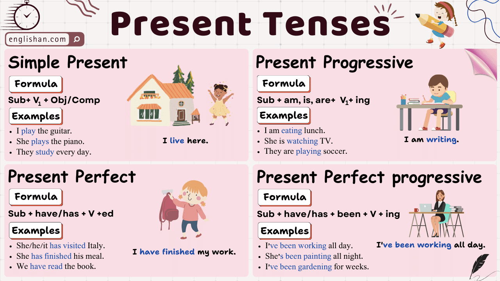

Gaming & Esports
Explore the world of e-sports, professional gaming, and digital competitions while mastering Present Tenses in English.
Grammar Focus: Present Tenses (Revision & Extension)
📚 Present Tenses in English
In English, we use different present tenses to talk about the present time. Here is a quick revision:
| Tense | Usage | Example |
|---|---|---|
| Present Simple | Facts, habits, routines, permanent situations | He plays video games every day. |
| Present Continuous | Actions happening now, temporary situations, annoying habits (with 'always') | He is playing a tournament right now. |
| Present Perfect | Past actions with a result now, life experiences, unfinished actions (with 'for'/'since') | He has won three tournaments this year. |
| Present Perfect Continuous | Actions that started in the past and are still continuing, often with emphasis on duration | He has been playing for five hours straight. |

Reading: The Rise of Online Competitive Gaming
Online competitive gaming, also known as e-sports, has become increasingly popular in recent years. With its growing fan base and lucrative prize pools, it's no wonder that many people are drawn to this form of entertainment. However, like any other activity, online competitive gaming has its pros and cons.
One of the main advantages of online competitive gaming is its accessibility. Unlike traditional sports, which often require physical strength and coordination, e-sports can be enjoyed by virtually anyone with an internet connection and a computer or gaming console. This inclusivity has allowed people from all walks of life to participate and compete at a high level, regardless of their age or gender.
Furthermore, online competitive gaming provides a platform for individuals to showcase their skills and talents. Many professional gamers have risen to fame through platforms such as Twitch and YouTube, where they stream their gameplay and interact with their fans. This not only allows them to earn a living doing what they love but also inspires others to pursue their passion for gaming.
Another benefit of online competitive gaming is the sense of community it fosters. Players often join teams and form close-knit communities, where they can socialise, strategise, and support one another. This camaraderie can help combat feelings of loneliness and isolation, particularly for those who may have difficulty forming connections in the offline world.
However, there are also some drawbacks to online competitive gaming. One of the most significant concerns is the potential for addiction. Like any other form of entertainment, online gaming can be highly addictive, and excessive play can negatively impact gamers' physical and mental well-being. It is crucial for players to set boundaries and prioritise their health and responsibilities outside of the game. Additionally, the competitive nature of online gaming can sometimes lead to toxic behavior. Trash-talking, violence, and cheating are unfortunately prevalent in certain gaming communities, which can create a hostile environment for players.
In conclusion, online competitive gaming offers numerous benefits, such as accessibility, opportunities for self-expression, and a sense of belonging. However, it is essential for players to be mindful of their gaming habits and to prioritise their well-being. Developers and organisations also have a responsibility to foster a positive and inclusive environment for all players.
Reading Comprehension
- Anyone with an internet connection can participate, regardless of age or gender.
- They stream gameplay on platforms like Twitch and YouTube and interact with fans.
- Players form communities where they socialise and support each other.
- The potential for addiction.
Speaking Questions
Consider: League of Legends, Dota 2, CS:GO, Fortnite, etc.
Think about physical vs. mental skills, training, competition.
Consider pros: fame, money, passion; cons: pressure, health.
• Use Present Continuous for current trends: "E-sports are becoming more popular."
• Use Present Perfect for achievements: "I have played games since childhood."
Topic: Is gaming a sport?
Writing Task
Write a small application, stating your experience, abilities, etc., and why you want to take part in it. (5–10 sentences)
Include: your gaming experience, preferred games, achievements, team experience, and motivation.
Grammar Exercises: Present Tenses
Type the letter of the correct answer (a, b, or c) in the field.
Type the correct form of the verb in the field.
Type the letter of the correct answer (a, b, or c) in the field.